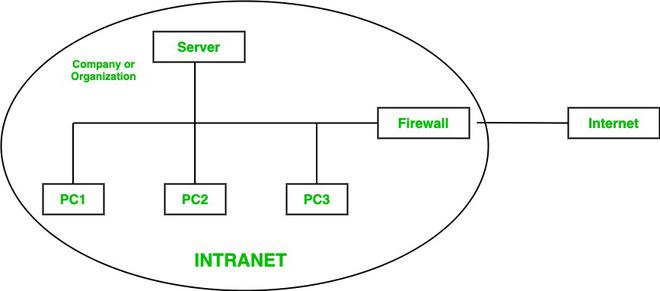

Intranet

An intranet is a private network used within an organization to share information and resources.
Features
- Restricted access
- Secure communication
- Internal collaboration
Example
A school portal or company internal system.
Importance
It improves communication and efficiency within organizations.